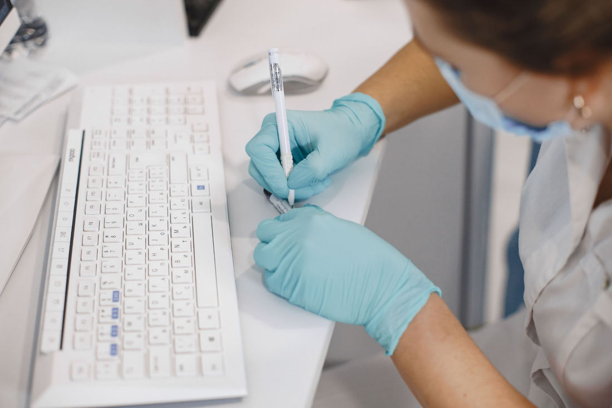

Build the tools patients use every day.
Synapse is a private healthcare technology company. We develop online patient platforms, appointment booking systems and health information websites.
We are expanding our digital services team. Join us to make healthcare easier to find, book and understand.
Our roles support flexible and remote work.
View open roles
- Patient Platforms
- Appointment Booking
- Accessible Design
Find a Job
Enter a job keyword, then continue to the Jobs page to review our open positions.
Current Vacancies
| Team | Position Details | Openings | |
|---|---|---|---|
| Position | Work Type | ||
| Patient Platforms | Front-End Web Developer (FE001) | Full-time | 1 |
| UX Designer – Patient Experience (UX002) | Full-time | 1 | |
| Total Openings | 2 | ||
Read the full descriptions for the Front-End Web Developer and UX Designer roles and use the reference number when applying.